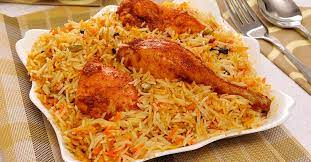
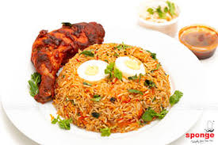
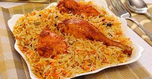
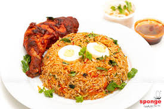
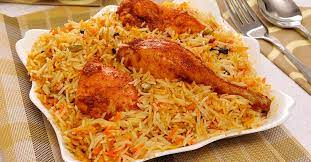
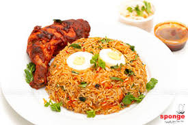

This dish is common among the Swahili community in Kenya. The cuisine is also meat based and special emphasis is given to finding the right kinds of rice, spices, meat and herbs. It is simply steamed rice eaten with Biryani stew. It is particularly made using the fragrant species of rice. This colourful dish can be served for lunch, dinner or during wedding occasions.
| Name | Quantity |
|---|---|
| Water | 8 2/3 (1874 g) |
| Raw white rice | 5 3/4 cups (1 kg) |
| Iodized salt | 2 tsp. (10 g) |
| Cooking oil | 7 tbsp. (85 g) |
| Food colour powder, egg yellow | 1 gram |

